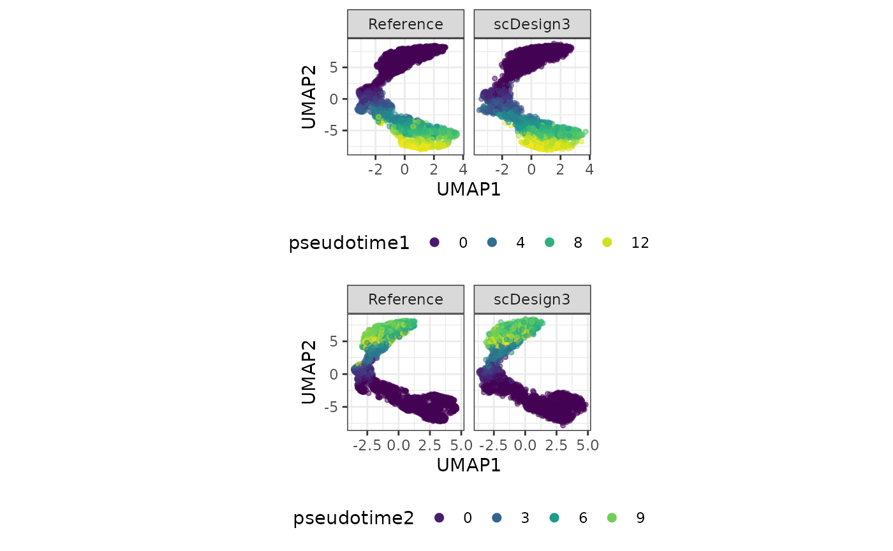

Simulate datasets with multiple lineages
Dongyuan Song
Bioinformatics IDP, University of California, Los Angelesdongyuansong@ucla.edu
Qingyang Wang
Department of Statistics, University of California, Los Angelesqw802@g.ucla.edu
17 July 2023
Source:../../scDesign3/code/vignettes/scDesign3-multipleLineages-vignette.Rmd
scDesign3-multipleLineages-vignette.Rmd
library(scDesign3)
library(SingleCellExperiment)
library(useful)
library(gridExtra)
library(ggplot2)
theme_set(theme_bw())Introduction
In this tutorial, we will show how to use scDesign3 to simulate the multiple lineages single-cell data.
Read in the reference data
The raw data is from the GEO with ID GSE72859, which describes myeloid progenitors from mouse bone marrow. We pre-select the top 1000 highly variable genes.
example_sce <- readRDS((url("https://figshare.com/ndownloader/files/40581980")))
print(example_sce)
#> class: SingleCellExperiment
#> dim: 1000 2660
#> metadata(0):
#> assays(3): counts cpm logcounts
#> rownames(1000): Prtn3 Elane ... Rnf144a Fabp5
#> rowData names(1): gene_short_name
#> colnames(2660): W31105 W31106 ... W39167 W39168
#> colData names(27): Seq_batch_ID Amp_batch_ID ... l1 l2
#> reducedDimNames(1): UMAP
#> mainExpName: NULL
#> altExpNames(0):To save computational time, we only use the top 100 genes.
example_sce <- example_sce[1:100, ]As we can see, this example dataset has two sets of pseudotime, thus two lineages. The variables pseudotime1 and pseudotime2 contain the corresponding pseudotime for each cell. The variables l1 and l2 indicate whether a particular cell belong to the first and/or second lineages.
head(colData(example_sce))[,c("pseudotime1","pseudotime2","l1","l2")]
#> DataFrame with 6 rows and 4 columns
#> pseudotime1 pseudotime2 l1 l2
#> <numeric> <numeric> <factor> <factor>
#> W31105 0.950862 0.568357 TRUE TRUE
#> W31106 9.168276 -1.000000 TRUE FALSE
#> W31107 -1.000000 7.981990 FALSE TRUE
#> W31108 11.394132 -1.000000 TRUE FALSE
#> W31109 -1.000000 8.080133 FALSE TRUE
#> W31110 11.398502 -1.000000 TRUE FALSESimulation
Then, we can use this multiple-lineage dataset to generate new data by setting the parameter mu_formula as two smooth terms for each lineage.
set.seed(123)
example_simu <- scdesign3(
sce = example_sce,
assay_use = "counts",
celltype = "cell_type",
pseudotime = c("pseudotime1", "pseudotime2", "l1", "l2"),
spatial = NULL,
other_covariates = NULL,
mu_formula = "s(pseudotime1, k = 10, by = l1, bs = 'cr') + s(pseudotime2, k = 10, by = l2, bs = 'cr')",
sigma_formula = "1",
family_use = "nb",
n_cores = 2,
usebam = FALSE,
corr_formula = "1",
copula = "gaussian",
DT = TRUE,
pseudo_obs = FALSE,
return_model = FALSE,
nonzerovar = FALSE
)Then, we can create the SinglecellExperiment object using the synthetic count matrix and store the logcounts to the input and synthetic SinglecellExperiment objects.
Visualization
set.seed(123)
compare_figure <- plot_reduceddim(ref_sce = example_sce,
sce_list = list(simu_sce),
name_vec = c("Reference", "scDesign3"),
assay_use = "logcounts",
if_plot = TRUE,
color_by = "pseudotime1",
n_pc = 20)
compare_figure2 <- plot_reduceddim(ref_sce = example_sce,
sce_list = list(simu_sce),
name_vec = c("Reference", "scDesign3"),
assay_use = "logcounts",
if_plot = TRUE,
color_by = "pseudotime2",
n_pc = 20)
grid.arrange(compare_figure$p_umap, compare_figure2$p_umap)
Session information
sessionInfo()
#> R version 4.3.0 (2023-04-21)
#> Platform: x86_64-pc-linux-gnu (64-bit)
#> Running under: Ubuntu 20.04.6 LTS
#>
#> Matrix products: default
#> BLAS: /usr/lib/x86_64-linux-gnu/openblas-pthread/libblas.so.3
#> LAPACK: /usr/lib/x86_64-linux-gnu/openblas-pthread/liblapack.so.3; LAPACK version 3.9.0
#>
#> locale:
#> [1] LC_CTYPE=en_US.UTF-8 LC_NUMERIC=C
#> [3] LC_TIME=en_US.UTF-8 LC_COLLATE=en_US.UTF-8
#> [5] LC_MONETARY=en_US.UTF-8 LC_MESSAGES=en_US.UTF-8
#> [7] LC_PAPER=en_US.UTF-8 LC_NAME=C
#> [9] LC_ADDRESS=C LC_TELEPHONE=C
#> [11] LC_MEASUREMENT=en_US.UTF-8 LC_IDENTIFICATION=C
#>
#> time zone: America/Los_Angeles
#> tzcode source: system (glibc)
#>
#> attached base packages:
#> [1] stats4 stats graphics grDevices utils datasets methods
#> [8] base
#>
#> other attached packages:
#> [1] gridExtra_2.3 useful_1.2.6
#> [3] ggplot2_3.4.2 SingleCellExperiment_1.22.0
#> [5] SummarizedExperiment_1.30.2 Biobase_2.60.0
#> [7] GenomicRanges_1.52.0 GenomeInfoDb_1.36.1
#> [9] IRanges_2.34.1 S4Vectors_0.38.1
#> [11] BiocGenerics_0.46.0 MatrixGenerics_1.12.2
#> [13] matrixStats_1.0.0 scDesign3_0.99.5
#> [15] BiocStyle_2.28.0
#>
#> loaded via a namespace (and not attached):
#> [1] tidyselect_1.2.0 viridisLite_0.4.2 farver_2.1.1
#> [4] dplyr_1.1.2 viridis_0.6.3 bitops_1.0-7
#> [7] fastmap_1.1.1 RCurl_1.98-1.12 digest_0.6.33
#> [10] lifecycle_1.0.3 survival_3.5-5 gamlss.dist_6.0-5
#> [13] magrittr_2.0.3 compiler_4.3.0 rlang_1.1.1
#> [16] sass_0.4.6 tools_4.3.0 utf8_1.2.3
#> [19] yaml_2.3.7 knitr_1.43 labeling_0.4.2
#> [22] askpass_1.1 S4Arrays_1.0.4 mclust_6.0.0
#> [25] reticulate_1.30 DelayedArray_0.26.6 plyr_1.8.8
#> [28] withr_2.5.0 purrr_1.0.1 desc_1.4.2
#> [31] grid_4.3.0 fansi_1.0.4 colorspace_2.1-0
#> [34] scales_1.2.1 MASS_7.3-60 cli_3.6.1
#> [37] mvtnorm_1.2-2 rmarkdown_2.23 crayon_1.5.2
#> [40] ragg_1.2.5 generics_0.1.3 umap_0.2.10.0
#> [43] RSpectra_0.16-1 cachem_1.0.8 stringr_1.5.0
#> [46] zlibbioc_1.46.0 splines_4.3.0 parallel_4.3.0
#> [49] BiocManager_1.30.21 XVector_0.40.0 vctrs_0.6.3
#> [52] Matrix_1.6-0 jsonlite_1.8.7 bookdown_0.34
#> [55] gamlss_5.4-12 irlba_2.3.5.1 systemfonts_1.0.4
#> [58] jquerylib_0.1.4 glue_1.6.2 pkgdown_2.0.7
#> [61] stringi_1.7.12 gtable_0.3.3 munsell_0.5.0
#> [64] tibble_3.2.1 pillar_1.9.0 htmltools_0.5.5
#> [67] openssl_2.0.6 gamlss.data_6.0-2 GenomeInfoDbData_1.2.10
#> [70] R6_2.5.1 textshaping_0.3.6 rprojroot_2.0.3
#> [73] evaluate_0.21 lattice_0.21-8 highr_0.10
#> [76] png_0.1-8 memoise_2.0.1 bslib_0.5.0
#> [79] Rcpp_1.0.11 nlme_3.1-162 mgcv_1.8-42
#> [82] xfun_0.39 fs_1.6.2 pkgconfig_2.0.3